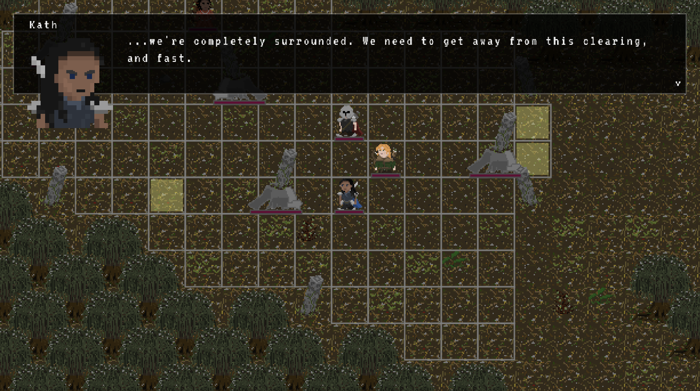
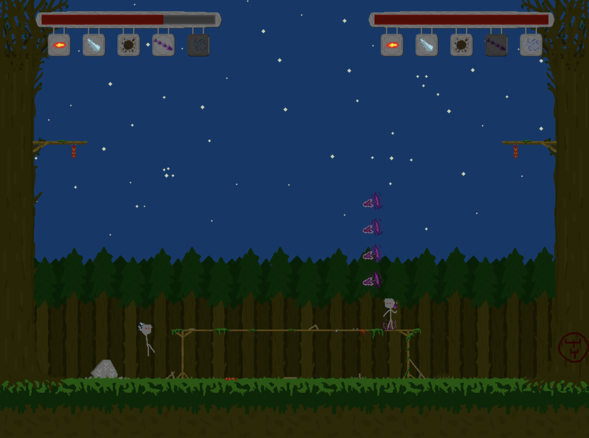
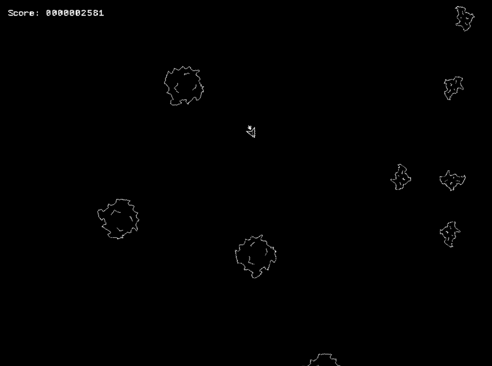

Game development
When I have spare time, I like to make video games! Here are some of my projects:
Abelon: My current project. A 2D, top-down story told through exploration and turn-based tactical combat. Written in Lua using the Love2D engine. Become the knight Abelon and take on the world!
Guy Battle: A 2D fighting game where you control a spellcasting Guy and battle other Guys. Battle a friend by sharing the keyboard or fight a horde of AI Guys! Written in C using SDL for rendering and audio.
FormA: A two-person quest to use CBMC to verify a non-trivial Asteroids-style video game implementation using bounded model-checking.
Shadow Hunters: A collaboration with four friends to re-create the cult classic board game Shadow Hunters as an online multiplayer game. Written in Python and JavaScript using Phaser, Flask and SocketIO.